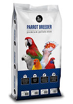
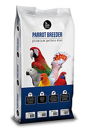
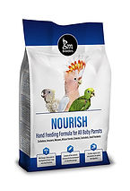
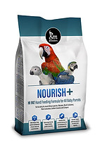

Naše produkty
Parrot Breeder -
Vysoká energie

Vědecky vyvinuté jako plnohodnotné extrudované granule o velikosti 6 mm, ideální pro papoušky, kteří jedí pomocí nohou.
Lehké a zábavné, se zvláštní chutí, která povzbuzuje ke krmení.
Parrot Breeder -
Papoušci a papoušíci
Vědecky vyvinuté jako plnohodnotné extrudované lentilkovité granule o velikosti 4,5 mm, vhodné pro papoušky a papoušíky, kteří jedí zobákem. Lehké a zábavné, se zvláštní chutí, která povzbuzuje ke krmení.
Parrot Breeder -
Udržovací krmivo
Vědecky vyvinuté jako plnohodnotné extrudované granule o velikosti 6 mm, ideální pro papoušky, kteří jedí pomocí nohou.
Lehké a zábavné, se zvláštní chutí, která povzbuzuje ke krmení.
Parrot Breeder -
Malí papoušíci

Vědecky vyvinuté jako plnohodnotné extrudované granule, ideální pro agapornise a malé papoušíky, kteří jedí zobákem.
Lehké a zábavné, se zvláštní chutí, která povzbuzuje ke krmení.
Bez syntetických konzervantů
Nourish | Krmná směs pro ruční odchov
pro mláďata

Dodává vysoký podíl bílkovin, tuků, aminokyselin, vitaminů a vápníku potřebných pro vývoj a růst mláďat. Přesná a vyvážená směs pečlivě testovaných a vybraných surovin poskytuje to nejlepší řešení pro nejzdravější přirozené potřeby mláďat. Obsahuje tepelně odolné probiotické bakterie přizpůsobené trávicímu systému papoušků a trávicí enzymy
Nourish Plus | Krmná směs s vysokým obsahem tuku pro ruční odchov mláďat

Dodává vysoký podíl bílkovin, tuků, aminokyselin, vitaminů a vápníku potřebných pro vývoj a růst mláďat. Přesná a vyvážená směs pečlivě testovaných a vybraných surovin poskytuje to nejlepší řešení pro nejzdravější přirozené potřeby mláďat. Obsahuje tepelně odolné probiotické bakterie přizpůsobené trávicímu systému papoušků a trávicí enzymy